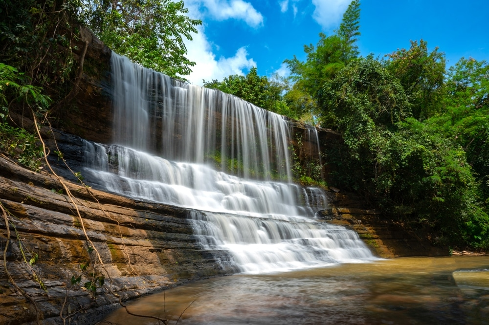
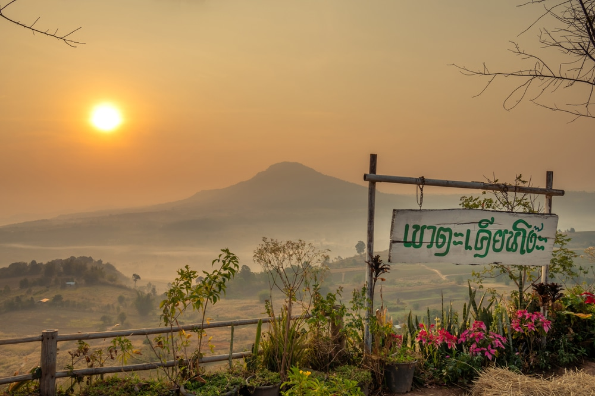

สถานที่ท่องเที่ยวในจังหวัดเพชรบูรณ์
วัดพระธาตุผาซ่อนแก้ว
>วัดพระธาตุผาซ่อนแก้ว ตั้งอยู่ตำบลแคมป์สน อำเภอเขาค้อ จ.เพชรบูรณ์ เป็นสถานที่อันเป็นธรรมภูมิที่งดงาม รายล้อมด้วยทิวเขาสูงสลับซับซ้อน ความโดดเด่นของวัดพระธาตุผาซ่อนแก้ว คือ ความงดงามของของเจดีย์ และลวดลายการตกแต่งด้วยถ้วยกระเบื้องหินสีต่างๆ
ที่งดงามแปลกตา รวมทั้งองค์พระพุทธรูปสีขาว ประดิษฐานเรียงกัน 5 องค์ มองเห็นโดดเด่นแต่ไกล ในยามเช้าสามารถเห็นสายหมอกที่ลอยผ่านไปรอบตัววัด เป็นภาพที่งดงามดุจ สวงสวรรค์
น้ำตกตาดใหญ่
น้ำตกตาดใหญ่ สถานที่ท่องเที่ยวในจังหวัดเพชรบูรณ์ ที่ตั้งอยู่ในเขตพื้นที่ อำเภอน้ำหนาว จังหวัดเพชรบูรณ์
น้ำตกตาดใหญ่ ถือเป็นน้ำตกขนาดใหญ่ที่อุทยานแห่งชาติภูผาม่าน จังหวัดเพชรบูรณ์ อยู่ห่างจากอำเภอน้ำหนาวไม่ไกลสักเท่าไหร่
เขาตะเคียนโง๊ะ
เขาตะเคียนโง๊ะ ที่เที่ยวเพชรบูรณ์ ที่ตั้งอยู่ในเขตพื้นที่ตำบลหนองแม่นา อำเภอเขาค้อ จังหวัดเพชรบูรณ์ อีกหนึ่งจุดชมวิวทะเลหมอก ที่สวยที่สุดอีกแห่งหนึ่งบนเขาค้อ นักท่องเที่ยวทุกท่านสามารถเดินทางมาเที่ยวได้อย่างง่ายดาย
เขาตะเคียนโง๊ะสามารถนำรถขึ้นได้เลย นอกจากนี้เป็นจุดชมวิวที่สวยงามแล้ว ยังมีจุดกางเต็นท์อยู่บริเวณรอบๆ เขา